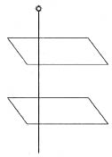

Şimdiye dek söz konusu ettiğimiz bütün optik görüngüler, dalga teorisinin doğruluğunu göstermektedir. Işığın küçük deliklerin çevresinde eğrilmesi ve kırılmanın açıklanması, bunun en güçlü kanıtlarıdır. Mekanikçi görüşün ışığında, hâlâ yanıtlanması gereken bir soru olduğunu görüyoruz: Esirin mekanik özelliklerinin belirlenmesi. Bu problemin çözümü için, ışık dalgalarının esirde enine mi yoksa boyuna mı olduğunu bilmek özellikle önemlidir. Başka bir söyleyişle, ışık, ses gibi mi yayılır? Dalga, ortamın yoğunluğunda taneciklerin salınımlarının yayılma yönünde olacağı biçimde beliren değişmelerden mi ileri gelir? Yoksa, esir esnek bir pelteye, içinde yalnız enine dalgaların yayılabileceği ve tanecikleri dalganın kendisinin ilerlediği yöne dik bir yönde kımıldayan bir ortama mı benzer?
Bu problemi çözmeden önce, hangi yanıtın yeğ tutulması gerektiğine karar vermeye çalışalım. Besbelli, ışık dalgaları boyuna ise, bu bizi mutlu eder. Bu durumda, mekanik bir esir tasarlamanın güçlükleri daha basit olurdu. Esir tasarımız, büyük bir olasılıkla, ses dalgalarının yayılmasını açıklayan mekanik bir gaz tasarısı gibi bir şey olurdu. Enine dalgaları ileten bir esir tasarısını geliştirmek, çok daha güç olurdu. Bir pelteyi, enine dalgaların yayılmasını sağlayacak biçimde düzenlenmiş taneciklerden yapılı bir ortam gibi düşünmek kolay iş değildir. Huygens, esirin “pelte gibi” olmaktan çok, “hava gibi” olduğunun ortaya çıkacağına inanıyordu. Doğa, bu noktada, bütün olayları mekanikçi görüş açısından anlamaya çalışan fizikçilere karşı sevecen midir? Bu soruyu yanıtlamak için bazı yeni deneyleri tartışmalıyız.
Buna bir yanıt bulmamızı sağlayabilecek birçok deneyden yalnız birini ayrıntılı olarak inceleyeceğiz. Burada anlatmamız gerekmeyen özel bir biçimde kesilmiş, turmalin kristalinden çok ince bir levha düşününüz. Bu kristal levha, ardındaki bir ışık kaynağını görebileceğimiz kadar ince olmalıdır. Şimdi böyle levhalardan iki tane alıp ikisini de gözümüzle ışık kaynağının arasına yerleştirelim. [Şekil-41]

[Şekil-41]
Görmeyi beklediğimiz şey nedir? Levhalar yeterince inceyse, gene nokta ışık kaynağı. Çok talihliyizdir: Deney umduğumuzu boşa çıkarmaz. Burada talihin söz konusu olup olmadığına aldırmadan, levhalardan bakınca ışık noktasını gördüğümüzü varsayalım. Şimdi kristal levhalarından birinin konumunu, o levhayı döndürerek, yavaş yavaş değiştirelim. Levhayı döndürdüğümüz eksenin konumu değişmiyorsa, bu söylenenin bir anlamı vardır. Levhalardan geçen ışık ışınının belirlediği çizgiyi bir eksen olarak kabul edeceğiz. Bu, bir kristalin eksen üzerinde kalan noktaları dışındaki bütün noktalarının yerini değiştiriyoruz demektir. Garip bir şey olur! Işık, büsbütün görünmez oluncaya dek gittikçe ölgünleşir. Levhayı döndürmeyi bırakmazsak, başlangıçtaki konuma gelinince, gene başlangıçtaki görünüşle karşılaşırız.
Bunun ve buna benzer deneylerin ayrıntılarına girmeden, şunu sorabiliriz: Işık dalgaları boyuna ise, bu görüngüler açıklanabilir mi? Boyuna dalgalarda, esirin tanecikleri, ışın gibi, eksen boyunca hareket ederdi. Kristal dönerse, eksen boyunca değişen hiçbir şey olmaz, eksen üzerindeki noktalar hareket etmez ve o noktaların yakınında ancak çok az bir yer değiştirme olur. Boyuna bir dalga için ışığın yitmesi ve belirmesi gibi köklü değişiklikler herhalde olamazdı. Bu ve buna benzer birçok görüngü ancak ışık dalgalarının boyuna değil, enine olduğu varsayımı ile açıklanabilir! Ya da, başka bir söyleyişle, esirin “pelte gibi” bir niteliği olduğu kabul edilmelidir.
Bu, çok üzücüdür! Esiri mekanik olarak tanımlamaya çalışırken çok büyük güçlüklere göğüs germeye hazır olmalıyız.